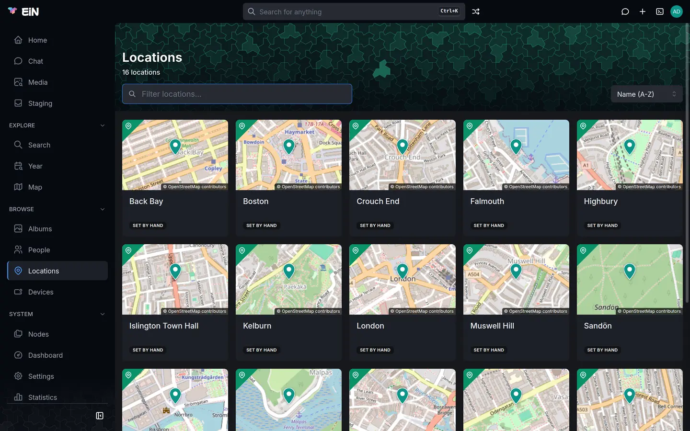

This page is for everyone in the family who works with places: the homes, cottages, churches and towns where pictures were taken and people lived. It covers the Locations page, creating a location and drawing where it lies, how pictures join a location by themselves, and the Map page, where pictures, locations and GPS tracks are drawn together.
How one picture gets its position, and how you correct it, is on Dates and places of pictures.
What a location is
A location is a named place in the archive, such as "The cottage at Malpas", "Highbury" or "London". It has a name and, if you give them, an address, a city and a country, a description, labels and the people who lived there. Where it lies on the map is one of three shapes:
| Shape | What it is | Where it comes from | Pictures inside join it |
|---|---|---|---|
| Point | One spot, with no size | Coordinates typed or clicked when the location is created | No |
| Circle | A centre and a radius | Drawn by hand, or worked out from the location's address or linked pictures | Yes |
| Polygon | An outline with three or more corners | Drawn by hand | Yes |
A location with a circle or a polygon does work for you:
- Pictures whose position falls inside it are linked to it. The viewer shows the location's name for them, and its Media tab lists them.
- Typing
@and the location's name finds those pictures in search and on the map, and narrows the Year page to what holds them. - An album's Info tab lists the locations of its pictures under Places.
- Staging names the albums it suggests after the location most of their pictures are linked to, or else the nearest location within 500 m.
People's homes are locations too, so a location's page shows who lived there; see
Family tree, events and homes. Locations are kept under
/archive/locations in the tree.
Browse the Locations page
Open Locations in the sidebar, under Browse.


The header counts the locations, for example "16 locations", and has these controls:
| Control | What it does |
|---|---|
| Filter locations… | Narrows the cards as you type, by name and address. Case and accents do not matter. |
| Show | All (N) or Needs location (N), the locations with no place on the map. It appears only while at least one location has none. |
| Sort | Name (A-Z) or Name (Z-A). This browser remembers your choice. |
Each card shows a small map of where the location lies, or a crossed-out pin when it has no place yet, then its name, its address and one of these badges:
| Badge | Means |
|---|---|
| set by hand | Someone drew its shape or typed its coordinates |
| from N photos | Its circle was worked out from N geotagged photos linked to it |
| from address | Its circle comes from looking up its address |
| N suggestions | The address lookup found candidates but was not sure; you pick one on its page |
Click a card to open the location. A location has no cover photo to choose in the web interface; its card shows the map.
With no locations at all, the page says "No locations yet" and "Homes, churches, summer houses:
locations where people lived or pictures were taken.", with a New location button when you are
signed in. A filter that matches nothing says No locations found matching "<text>".
Create a location
You need to be signed in.
- Press the plus (Create) in the top bar and choose Location. On an empty Locations page, New location does the same. See The Create menu.
- The Create Location dialog opens with a map beside the fields. Type a Name, for example
The cottage at Malpas. It is the only field you must fill in. - If the place has an address, type it under Address as it was written down: street and number, postcode and town. The hint reads "Looked up on the map when no coordinates are given, and again whenever it is edited."
- If you know exactly where it is, click the map under Coordinates, or type Latitude and Longitude. A marker shows the spot.
- Press Create. The location's page opens.
What happens next depends on what you gave:
- Coordinates make the location a point, set by hand. An address you typed is kept as written and not looked up.
- An address and no coordinates: EiN looks the address up in the background, a few seconds after you press Create. Reload the location's page to see the answer: a circle with a radius of 50 m on the building, a list of suggestions to choose from, or still "No location set yet." when nothing matched. See Where a location's position comes from.
- Only a name: EiN looks up the name the same way. A name such as
Falmouthbrings suggestions at best, because a name has no house number or postcode to confirm the answer.
If the dialog says "Give both latitude and longitude, or neither.", fill in the other half or
empty both. The page's web address is made from the name, /locations/the-cottage-at-malpas for
the example, so two locations whose names give the same web address cannot both exist. When the
dialog reports an error for that reason, choose another name.
Where a location's position comes from
A location gets its place on the map from the first of these that gives one:
- Set by hand. A circle or polygon drawn in Edit location, or coordinates given when the location was created. Nothing else ever moves it.
- Its pictures. When at least two geotagged pictures are linked to the location directly, by hand in the terminal, EiN puts a circle around them, as wide as they spread. A picture far from the rest is left out, and pictures spread wider than 25 km give no circle. Pictures that joined the location because they lie inside its shape do not count.
- Its address. EiN asks OpenStreetMap's Nominatim service where the address is, or where the name is when there is no address. EiN uses the answer by itself only when the answer is a building, the house number or postcode you wrote agrees with it, and no answer that ranks almost as high lies more than 250 m away. The location then gets a circle with a radius of 50 m, and its City and Country are filled in. A less certain answer is kept as up to five suggestions for you to choose from.
| Source | Badge on the card | Line on the Info tab |
|---|---|---|
| Set by hand | set by hand | "Set by hand" |
| Its pictures | from N photos | "Derived from N geotagged photos spread over N m" |
| Its address | from address | "Geocoded from the address" |
An address is looked up in Sweden first, and in the rest of the world when Sweden has no match. A location with only a name is looked up worldwide. For a place abroad, write the town and the country in the address, so that a street of the same name in Sweden does not win.
When you change the address of a location that was placed from its address, EiN looks up the changed address. If it cannot be placed with certainty, the location loses its old position and shows suggestions instead, or "No location set yet." when nothing matched. A location placed from its pictures stays where its pictures are, and a location set by hand keeps its shape whatever the address says.
A location's page

The header shows the location's name and address, the people who live there, and its labels. If you may change the location, it also has Share, Edit and a ⋮ menu with Add event and Move to trash. On a phone all of these are in the ⋮ menu. Sharing a location works as for anything else; see Sharing.
| Tab | What it shows |
|---|---|
| Info | The map with the location's shape, its details and its current residents. The page opens here. |
| Timeline | Residents moving in and out, the location's own events, and the albums with photos taken there |
| Media | The pictures linked to the location, newest first, in month sections |
| Residents | Everyone recorded as having lived there, with their dates |
The page's web address keeps the tab, for example /locations/the-cottage-at-malpas?tab=media, so
you can link straight to it.
The Info tab
- The map shows the location's circle, polygon or point. The button in its top-right corner switches between Map, Dark map and Satellite.
- Details lists the address as written, the full address the lookup found when that differs, the city and country, the description, the shape ("Polygon, 6 points", "50.24400, -5.02700 · radius 300 m", or the coordinates alone for a point), and where the position came from.
- Current residents lists the people living there, each with when they moved in, such as "since 2021", or "dates unknown". All residents opens the Residents tab. With nobody recorded, the card says "No known residents."; when everyone recorded has moved out, it says "Nobody lives here now, as far as the archive knows."
A location with no place says "No location set yet." under the map. If you may change the location, Location on map beside it opens Edit location.
The Media tab
The Media tab lists every picture linked to the location; see How pictures join a location. You can select pictures and open them in the viewer as in an album, and the selection bar offers Set time. With nothing linked, the tab says "No photos here yet. Geotagged photos inside its area are linked to it automatically." For a location with no place yet, it says "No photos here yet. Once it has a location, geotagged photos inside its area are linked to it automatically."
Pick from suggested locations
When the lookup found candidates but was not sure, the Info tab shows numbered pins on the map
and a Suggested locations card: "Geocoding was not confident enough to place this automatically.
Pick the right one, or set it by hand." Each row has the place's full name, its kind (such as
city or house) and its coordinates. Pointing at a row lights up its pin, and the other way
round.
- Open the location's Info tab.
- Click the numbered pin that looks right, or its row in the list.
The location gets a circle with a radius of 50 m at that spot, marked "Geocoded from the address", and the suggestions disappear. If none of them is right, press None of these under the map or None of these — place it by hand under the list. Both open Edit location, where you draw the shape yourself.
Only someone who may change the location can pick a suggestion. Everyone else sees the list.
Draw a circle or a polygon
You need permission to change the location.
- Open the location and press Edit, or Location on map when it has no place yet.
- The Edit location dialog has the fields on one side and On the map on the other. Choose Circle or Polygon above the map.
- Draw the shape:
- Circle: click the map to place the centre. The circle starts with a radius of 250 m. Drag the pin to move it, and drag the round handle on its right-hand edge to make it larger or smaller.
- Polygon: click the map once for each corner. Drag a corner to move it, click one of the small handles halfway along a side to add a corner there, and right-click a corner to remove it. A polygon needs at least three corners.
- Press Save.
The hint under the map repeats how the chosen mode works. When the location has suggestions, they show on this map as numbered pins, for reference only.
After Save, the location is "Set by hand". Within a few seconds, the library's pictures inside the shape are linked to it, and pictures it no longer covers are let go. Open the Media tab to see them.
Make the shape cover everywhere pictures of the place were taken: the garden, the jetty below the house, the whole village. A circle from an address is only 50 m around the building.
Good to know:
- Switching between Circle and Polygon clears what you drew. To start a shape again, switch to the other mode and back.
- Clicking the map does not move a circle that is already there. Move it by its pin.
- A location that is a point opens as a circle of 250 m around it. Move the pin or the handle and press Save, and the location becomes that circle.
- The dialog cannot take a location off the map. That is done in the terminal; see In the terminal.
If saving fails, the dialog stays open with the reason: "a polygon needs at least three corners" or "a location needs a name".
Change a location's name, address or description
Press Edit on the location. The Edit location dialog has these fields beside the map:
| Field | Notes |
|---|---|
| Name | Required. A changed name shows everywhere; the page's web address stays the same. |
| Address | "As it was written down. A changed address is looked up on the map again, unless the location was set by hand." |
| City | Filled in when EiN places the location from its address by itself. You can type it yourself. |
| Country | As for City. |
| Description | Free text, with Markdown. |
| Labels | One word each. A label on a location opens a search for that label when clicked. |
Emptying a field other than Name removes it. Save stays greyed out until you change something. After an address change, EiN says "Saved. The new address is looked up in the background; a location set by hand is kept." Reload the page after a few seconds to see where the lookup put it.
How pictures join a location
You do not file pictures into a location. EiN links them by these rules:
- A picture inside a shape is linked to it. A picture in the library with a position, from its GPS or set by hand, that falls inside a location's circle or polygon is linked to that location. This happens when the picture gets its position, and again whenever the location's shape changes.
- A picture has one location. When it falls inside several shapes, as a picture taken in Highbury lies inside both Highbury and London, it goes to the location whose centre is nearest. London's Media tab therefore does not list the pictures linked to Highbury.
- A point contains nothing. A location that is only a point collects no pictures.
- A changed shape moves the links. Pictures the shape no longer covers are let go, or go to another location that covers them.
- A link made by a person stays. A link made by hand in the terminal is never replaced by one of these.
To put pictures in a location, give them a position inside it. Select them, press Set location and choose the location under A known location: the pictures take the location's centre as their position, and join it when it has a circle or a polygon. The steps are in Set the place of pictures.
Residents and events
The Residents tab lists everyone who has lived at the location. Anyone who may change the location can add residents and correct their dates there with Add resident, choosing Person already here or New person and giving Moved in and Moved out. A resident without a Moved out date counts as living there, and appears under Current residents and in the header. The same records are a person's homes, seen from the other side: see Add a resident to a location.
Under ⋮, Add event writes a dated note on the location, which appears on its Timeline tab. A location's event needs both a Date and a Description; see Events of albums, locations and devices.
Move a location to the trash
If you may change the location, open ⋮ and choose Move to trash. EiN returns you to the Locations page and says "<name> moved to the trash", with Undo. You can also restore it from Trash in the account menu, for as many days as an administrator keeps the trash; see Your profile, favourites and trash.
The Map page
Open Map in the sidebar, under Explore. The map fills the page, with no header.

The map draws three things:
- Pictures with a position that you may see, gathered into piles. Pictures in staging are left out until they are filed.
- Locations that have a place, as pins.
- GPS tracks that devices recorded.
Opened from the sidebar, the map starts over Gothenburg in Sweden, whatever your pictures show. Zoom out to find them, or keep a bookmark of the view you use; see Share or bookmark a view.
Move around the map
Drag the map to move it, and zoom with the mouse wheel or by pinching. The map has no zoom buttons, and clicking a pile never zooms: it opens the pile. A small spinner in the top-left corner shows while the map reads what is in view.
Open pictures and piles
- A single picture is drawn as its thumbnail, and pointing at it shows its file name. Click it to open the viewer. The arrow keys then move through the other single pictures on the map.
- A pile is several pictures close together, drawn as one of them with the count on it. Pointing at it says "N photos — click to browse". Click it to open N photos here: the pictures behind it in month sections, with the spot's coordinates under the title. Open one in the viewer, or select pictures as in an album. The browser's Back, or a phone's back gesture, closes it and leaves you on the map.
- List the N photos in this view, the button with four squares in the top-right corner, opens every picture in view the same way, titled "N photos in this view". It shows while pictures are drawn and the view holds some.
Piles depend on the zoom: zoom in, and a pile splits into smaller piles and single pictures.
Locations and tracks on the map
- Location pins stand at each location's centre. Click a pin to open the location's page. The pins are hidden while the search box narrows the map; the years do not hide them.
- Tracks are the routes devices recorded, as coloured lines, one colour per day. Each track has three colours of its own that its days take in turn, so two days in a row differ, and other tracks use other colours. Pointing at a line shows the device's name and the day.
Tracks are always drawn in full: the years and the search box narrow the pictures only. How tracks get into EiN from GPX files is on A device's track.
Choose what the map shows
The funnel button at the top of the right-hand corner is the Show menu:
| Choice | Draws |
|---|---|
| All | Pictures, locations and tracks |
| Media | Pictures only |
| Locations | Location pins only |
| Tracks | Tracks only |
While one layer is chosen, the button shows that layer's icon instead of the funnel.
Change the map style
The button under it, Map style, opens a column of previews, each showing the place you are looking at in one style. Pointing at a preview names it, and clicking it changes the map:
| Style | What it is |
|---|---|
| Map | OpenStreetMap's street map, the default |
| Dark map | A dark grey map from Esri |
| Satellite | Aerial photographs from Esri |
The maps on a location's page and on an album's Map tab have their own style button in the corner, with the same three styles.
Narrow by years
Under the search box is a slider for the years, with the first year of the range drawn at its left and the last at its right. Drag either handle, and the map reads again when you let go. While the slider narrows the map, the two years turn white; with both handles at the ends, nothing is narrowed. Only years with pictures take room on the slider, so the decades most pictures come from get most of its length.
Search the map
The box at the foot of the map reads "Search this view — type @ for a person, location or label".
- Type what you are looking for. Words find pictures by what they show or contain, as on the Media
page.
@opens a list of people, locations and labels to pick from: type@pegand choose Peggy Wrenfield, for example. - Press Enter or the arrow at the right of the box. Nothing changes while you type.
The map then draws only the matching pictures in view and hides the location pins. For words, the 500 best matches in view are drawn. The box takes one person, one location and one label; when you pick a second person, the last one counts. A location finds the pictures linked to it. Except on a phone, an info icon beside the box shows what the box understood. To show everything again, empty the box and press Enter.
Finding pictures by what they show needs the media service; see What needs the media service and a language model.
Share or bookmark a view
The address bar holds the whole view, so a bookmark or a link you send opens the same map, and a reload keeps it. These parts of the address are the map's:
| Part | What it holds |
|---|---|
c |
The centre, as latitude and longitude |
z |
The zoom |
layers |
Which of media, locations and tracks are on; absent for all |
from, to |
The years |
base |
The map style; absent for Map |
q, person, location, tag |
What the search box holds |
For example, /map?c=50.244,-5.027&z=14&layers=media&from=1968&to=1975 shows the pictures taken
around the cottage at Malpas from 1968 to 1975. Every address of the web interface is listed on
Addresses in the web interface.
Where the maps and addresses come from
The map pictures and the address lookups come from outside services. Your photos, videos and recordings are never sent to them.
| What | From | What is sent |
|---|---|---|
| The Map style, and the small maps on cards | OpenStreetMap's tile servers, tile.openstreetmap.org |
Your browser asks for the map squares of the area you look at |
| The Dark map and Satellite styles | Esri, server.arcgisonline.com |
The same |
| A location's position from its address | OpenStreetMap's Nominatim, nominatim.openstreetmap.org |
The machine EiN runs on sends the location's address, or its name |
| Pictures' street addresses | Nominatim | The machine EiN runs on sends each picture's coordinates |
Without an internet connection, the maps have no background, while pins, thumbnails and tracks are still drawn, and addresses cannot be looked up.
For administrators: the public Nominatim service answers one request a second, and EiN paces its
own requests to that. The environment variable NOMINATIM_SEARCH_URL points the address lookups at
another Nominatim server, such as one of your own; see
Environment variables.
In the terminal
Locations are ordinary nodes, and these commands work on them in the terminal. Each links to its reference entry.
| Task | Command |
|---|---|
| List the locations with their coordinates | location-list |
| See a location's shape | position-get <location> |
Give a location a point or a circle (--polygon for a polygon) |
position-set <location>/position --lat=… --lng=… [--radius=…] |
| Take a location off the map | position-set <location>/position --clear |
| Mark a shape as set by hand, as Save does | geocode-location <location> --drawn |
| Look an address up again, even for a placed location | geocode-location --force <location> |
| Place a location again from its pictures or its address | location-locate --force <location> |
| Change the name, address, city, country or description | location-update |
| Link the pictures inside a location's shape at once | location-link-media --location <location> |
To turn the point "Islington Town Hall" into a circle with a radius of 150 m, the way the dialog does it:
# in EiN's terminal
position-set /archive/locations/Islington_Town_Hall/position --lat=51.5416 --lng=-0.1028 --radius=150
geocode-location /archive/locations/Islington_Town_Hall --drawnWrite negative coordinates with =, as --lng=-0.1028, so they are not read as an option. How to
link one picture to a location by hand is in Dates and places of pictures.
When something goes differently
- A location stays at "No location set yet." The lookup found nothing for its address. Edit the address so it has a house number, a postcode, the town and, abroad, the country, or draw its shape yourself.
- It shows suggestions although the address is right. The address has no house number or postcode to confirm the answer, or two places share the name. Pick the right one, or press None of these and draw it.
- Its circle is on the wrong building or in the wrong town. Draw it yourself with Edit. A shape set by hand is never moved by a lookup.
- Pictures taken there are not on its Media tab. Look for the cause in this order:
- the location is a point, which contains nothing: give it a circle or a polygon;
- the pictures have no position: give them one with Set location, as in Set the place of pictures;
- they lie inside another location whose centre is nearer, such as a house inside a town, and are on that location's Media tab;
- they were linked to another location by hand or by the import, which is never replaced;
- they are still in staging: file them into an album first;
- you drew the shape a moment ago: wait a few seconds and open the Media tab again.
- The page shows the old position after you changed the address. The lookup runs in the background. Reload the page after a few seconds. A location set by hand does not move for an address.
- Edit, Share and the ⋮ menu are missing. You may not change this location. Ask whoever owns it to share it with you; see Sharing.
- The map is grey, with thumbnails and pins but no streets. Your browser cannot reach the tile
servers: you are offline, or a network filter blocks
tile.openstreetmap.orgorserver.arcgisonline.com. - The Map page shows no pictures. It opens over Gothenburg; zoom out. Check that Show is on All or Media, that the year slider's handles are at the ends, and that the search box is empty.
- The location pins are gone from the map. The search box narrows the map, or Show is on Media or Tracks.
- A track ignores the year slider. Tracks are always drawn in full; only the pictures are narrowed.
Related pages
- Dates and places of pictures: a picture's position, street address, and Set location
- Family tree, events and homes: homes, residents and events
- Devices and GPS tracks: the devices whose tracks the map draws
- Search and the finder: finding pictures by location with
@ - Albums: an album's Map and Info tabs
- Viewing photos, videos and recordings: the place section of the details panel